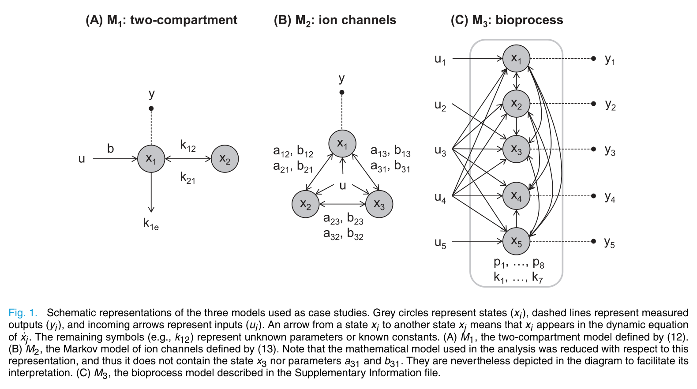
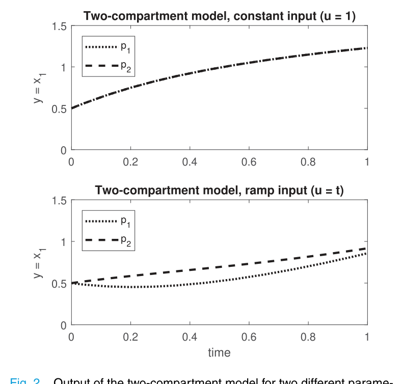

01 / THE QUESTION
얼마나 측정할지보다 먼저,
무엇으로 자극할지를 묻다
파라미터 추정이 잘되지 않을 때 측정 횟수나 최적화 알고리즘부터 바꾸기 쉽다. 하지만 그보다 앞선 질문이 있다. 지금의 모델·출력·입력 조합으로 서로 다른 파라미터를 구별할 수 있는가? 구조적으로 구별할 수 없다면 같은 조건에서 데이터를 더 모으는 것만으로는 문제가 풀리지 않는다.
기존의 구조적 식별가능성 분석은 흔히 “충분히 자극하는 입력”을 전제한다. 이 표현은 중요한 조건을 담고 있지만, 실험가에게 어떤 파형을 넣어야 하는지까지 알려주지는 않는다. 이 논문은 그 빈칸을 입력의 시간 미분에 대한 조건으로 구체화한다.
충분한 자극이란 무엇인가?
이 논문은 그 질문을
입력 미분과 행렬의 rank로 바꾼다.
실험 설계에는 자극의 형태, 측정할 출력, 초기조건을 정하는 정성적 단계가 있다. 그다음에 샘플 수와 측정 시각 등을 정하는 정량적 설계가 이어진다. 논문의 초점은 이 첫 단계 중에서도 입력이다.
- 모델과 관측을 정한다상태, 미지 파라미터, 측정 출력과 초기조건을 명시한다.
- 입력의 형태를 검사한다상수·램프 등 입력 조건에 따라 rank가 달라지는지 본다.
- 실험 조건을 구체화한다가능한 자극을 바탕으로 측정 일정과 추정 절차를 설계한다.
02 / THE METHOD
파라미터를 ‘움직이지 않는 상태’로 본다
핵심 아이디어는 상태 벡터에 미지 파라미터를 붙이는 것이다. 파라미터는 시간에 따라 변하지 않으므로 그 미분은 0이다. 이렇게 확장하면 출력을 통해 상태를 알아내는 관측가능성 문제와 파라미터를 알아내는 식별가능성 문제를 함께 다룰 수 있다.
출력과 그 시간 미분을 확장 상태에 대해 편미분해 행렬을 쌓는다. 상태 수가 n, 파라미터 수가 q라면, 이 행렬이 n + q의 rank에 도달하는지가 핵심 검사다.
적용 가정 아래 확장 상태의 국소 관측가능성과 파라미터의 국소 식별가능성을 판정한다.
| 기호·검사 | 의미 |
|---|---|
| n, q, m | 각각 상태 수, 파라미터 수, 출력 수 |
| x̃ | 상태와 미지 파라미터를 결합한 확장 상태 |
| col(…) | 각 편미분 블록을 세로로 쌓는 표기 |
| 열 제거 검사 | 파라미터에 해당하는 열을 제거해도 rank가 변하지 않으면, 그 파라미터의 비식별성을 판별하는 근거가 된다. |
입력이 움직이면, 미분도 달라진다
상수 입력에서 쓰던 미분을 그대로 적용하면 시변 입력의 영향을 놓칠 수 있다. 확장 리 미분은 상태 변화뿐 아니라 입력과 그 고차 미분의 변화까지 포함한다. 반복 미분으로 만들어지는 함수 h에 대해 이를 다음처럼 쓸 수 있다.
여기서 f̃ = (f, 0)은 확장 상태의 동역학이다. 출력에서 시작해 이 연산을 반복한다. 각 단계의 함수가 의존하는 입력 미분은 유한하므로 실제 계산에 남는 항도 유한하다.
이 처리는 단순한 표기 변경이 아니다. 제공된 요약에 따르면, 기존 STRIKE-GOLDD는 시변 입력이 필요한 모델을 비식별로 판정할 수 있었다. 논문은 입력 미분을 반영한 분석을 MATLAB 도구 STRIKE-GOLDD2로 구현하고, 다중 입력과 비유리 모델에도 적용했다.
입력 미분을 제한하며 필요한 파형을 찾는다
입력의 k차 이상 미분을 0으로 놓고 rank를 다시 계산한다. 이 제약은 한 시점에서만 성립하는 조건이 아니라, 고려하는 시간 구간에 걸친 입력 형태의 조건이다.
| 입력 후보 | 미분 조건 | 확인할 내용 |
|---|---|---|
| 상수 | u̇ = 0 | 시간 변화가 없어도 full rank에 도달하는가? |
| 램프 | u̇ ≠ 0, ü = 0 | 일정한 기울기를 추가하면 rank가 회복되는가? |
| 다중 입력 | 입력 성분별로 조건 부여 | 어떤 입력만 시간에 따라 바꾸면 되는가? |
| 특정 파형 | u(t)를 직접 대입 | 실제로 사용할 입력식이 조건을 만족하는가? |
한 번의 시변 실험을 여러 번의 상수 실험으로
여러 실험의 상태·출력·입력을 각각 복제하고 공통 파라미터를 공유하는 큰 모델로 묶으면, 실험들을 함께 분석할 수 있다. 논문은 GenSSI 2.0의 다중 실험 방식과 연결해, 서로 다른 값의 상수 입력이 시변 입력을 대신할 수 있는 사례를 제시한다. 관건은 반복 횟수 자체보다 결합된 실험이 추가적인 식별 정보를 주는가이다.
03 / THE EVIDENCE
세 모델이 보여주는 입력의 역할
논문은 2구획 모델, 이온 채널 마르코프 모델, 다중 입력 생물공정 모델을 비교한다. 입력 형태를 바꾸면 식별가능성이 달라진다는 공통점과, 다중 상수 입력 실험의 효과가 모델마다 다르다는 차이가 드러난다.

2구획 모델: 상수에서 겹치고, 램프에서 갈라진다
관측하는 것은 첫 번째 구획의 상태 x₁이다. 네 파라미터와 두 상태를 포함하는 확장 행렬에서 필요한 rank는 6이다. 미지 초기조건은 상태의 초기값에 해당하므로 확장 상태 차원에 별도의 파라미터처럼 다시 더하지 않는다.
| 입력 | rank(OI) | 판정 |
|---|---|---|
| 상수 | 5 / 6 | 비식별 |
| 램프 | 6 / 6 | 국소 식별 가능 |

이 모델에서는 상수 입력 실험을 여러 번 수행하는 방식으로 시변 입력을 대체할 수 없었다. “상수로 안 되면 서로 다른 상수로 반복하면 된다”는 전략이 보편적인 해법은 아니라는 뜻이다.
이온 채널: 서로 다른 상수 전압 네 번의 힘
막전위 입력 u는 전이율 Mij = exp(aij + biju)에 들어간다. 상수 입력에서는 비식별이지만 램프 형태의 시변 입력에서는 식별가능성을 확보한다.
2구획 모델과 달리, 여기서는 값이 다른 상수 입력 실험 4회가 시변 입력을 대체한다. 이는 여러 전압 수준을 사용하는 실험의 효과를 이해하는 이론적 근거가 된다. 다만 개별 상수 실험의 결합과 하나의 구간 상수 프로토콜을 대응시킬 때에는 각 구간의 상태와 초기조건 설정도 함께 고려해야 한다.
생물공정: 다섯 입력 중 두 개만 바꾼다
모든 입력을 상수로 두면 p₄부터 p₇까지가 비식별이다. 하지만 u₃와 u₄ 두 입력만 램프로 바꾸면 전체 파라미터가 국소적으로 식별 가능해진다.
u₃, u₄의 기울기는 0이 아닌 램프 조건으로 둔다.
이 모델 역시 서로 다른 상수 입력 실험 4회로 대체할 수 있다. 입력이 여러 개일 때 모든 채널을 복잡하게 자극하기보다, 식별에 필요한 채널을 먼저 찾는 접근의 가치를 보여준다.
| 모델 | 상수 입력 1회 | 충분한 시변 입력 | 다중 상수 실험으로 대체 |
|---|---|---|---|
| 2구획 | rank 5, 비식별 | 램프 → rank 6 | 불가한 사례 |
| 이온 채널 | 비식별 | 램프 | 서로 다른 입력 4회 |
| 생물공정 | p₄–p₇ 비식별 | u₃, u₄만 램프 | 서로 다른 입력 4회 |
‘4회’는 제시된 모델과 실험 설정의 결과다. 모든 시스템에 필요한 횟수나 일반적인 최소 횟수를 뜻하지 않는다.
04 / BOUNDARIES
이 결과가 보장하는 것의 범위
- 국소 식별가능성이다. 가까운 파라미터 값들을 구별할 수 있다는 판정이며, 전체 파라미터 공간에서 해가 유일하다는 전역 식별가능성은 별도로 다뤄야 한다.
- 구조적 가능성과 실제 추정 성능은 구분된다. 식별 가능하더라도 잡음, 표본 수, 측정 정밀도와 민감도에 따라 실제 추정은 어려울 수 있다.
- 기호 계산의 비용이 있다. 큰 모델에서는 행렬과 반복 미분 계산이 무거워진다. STRIKE-GOLDD의 분해·부분 분석이 활용될 수 있다.
- 다중 상수 실험의 대체 조건은 일반화되지 않았다. 어떤 모델에서 시변 입력을 여러 상수 실험으로 바꿀 수 있는지는 후속 연구 과제로 남는다.
05 / APPLICATION PERSPECTIVE
HR35 유압 모델에 던지는 질문
다음은 원 논문의 검증 결과가 아니라, 제공된 노트의 HR35 관점에서 도출한 적용 아이디어다. 실제 식별가능성은 HR35의 구체적인 동역학 식, 측정 출력, 초기조건을 넣어 확인해야 한다.
입력의 세기를 정하기 전에 형태를 검사한다
노트에서 ‘축 G’로 지칭한 실험 설계 관점에서, Swevers의 푸리에 급수 설계가 자극을 얼마나 줄지 정하는 문제라면 이 논문은 어떤 형태의 자극이 필요한지 먼저 묻는다. 밸브 명령에서 압력, 속도로 이어지는 HR35 모델에 대해 상수 조이스틱 명령만으로 체적 탄성계수 β, 면적, 마찰을 구별할 수 있는지 검사할 수 있다.
여러 정적 자세가 제공하는 정보를 분리한다
노트는 Ferlibas·Werner의 정지 자세 세트를 다중 실험 관점과 연결한다. 여러 자세의 정적 시험이 시변 자극을 어느 정도 대신하는지는 유용한 질문이다. 다만 자세 변화와 입력 변화가 모델에서 어떻게 표현되는지 정의한 뒤, 무엇을 식별하고 무엇을 식별하지 못하는지 판정해야 한다.
비선형 입력과 비매끄러운 입력 특성을 구분한다
이 방법은 입력이 비선형으로 들어가는 모델도 다룬다. 다만 데드밴드처럼 비매끄러운 특성은 해석성 가정을 점검해야 한다. 매끄러운 근사를 사용한다면 근사 모델에서 얻은 결론임을 명시하고, 제곱근 압력차 항 역시 적용 영역과 경계를 확인해야 한다.
파라미터 장부를 먼저 정리한다
트윈 장부의 assumed 값 중 현재 모델·출력·허용 입력 조건에서 구조적으로 비식별인 항목을 먼저 찾는다. 이를 바탕으로 고정할 값, 추가 측정이 필요한 값, 실험으로 식별할 값을 구분한다. 입력이나 관측을 바꾸면 판정이 달라질 수 있으므로, 비식별이라는 꼬리표에는 반드시 분석 조건을 함께 기록한다.
06 / WHAT TO DO NEXT
좋은 실험은 구별 가능한 질문에서 시작한다
이 논문의 실용적인 메시지는 “램프를 쓰라”는 처방보다 넓다. 먼저 모델이 어떤 입력 변화에서 파라미터 차이를 출력에 드러내는지 알아내라는 것이다. 그 조건을 확인해야 정량적 실험 설계도 의미 있는 출발점을 갖는다.
- 미지 파라미터, 측정 출력, 초기조건의 가정을 명시한다.
- 상수 입력에서 확장 행렬의 rank와 비식별 파라미터를 확인한다.
- 입력 미분 조건을 바꾸며 충분한 파형과 필요한 입력 채널을 찾는다.
- 시변 입력이 어렵다면 서로 다른 상수 입력 실험을 결합해 검사한다.
- 구조적 조건을 확보한 뒤 잡음과 실제 추정 성능을 평가한다.
The takeaway
데이터를 더 모으기 전에,
데이터가 차이를 드러낼 수 있는지 확인하자.
입력은 시스템을 움직이는 수단이자 파라미터를 구별하는 조건이다. 실험의 첫 질문을 “얼마나 오래 측정할까?”에서 “어떤 입력이면 차이가 보일까?”로 옮기는 것. 이 논문이 제안하는 설계의 출발점이다.
07 / SOURCE NOTES
논문 정보와 해설의 범위
Alejandro F. Villaverde · Neil D. Evans · Michael J. Chappell · Julio R. Banga
IIM-CSIC, Vigo · University of Warwick
IEEE Control Systems Letters, 3(2), 272–277, 2019.
온라인 출판: 2018년 9월
- 이 글은 제공된 Obsidian 논문 요약 노트를 공개 해설 형식으로 재구성했다. 수식은 웹에서 읽기 쉽도록 표기를 일부 압축했으며, 식 번호는 노트에 기재된 원문 번호를 따른다.
- 두 그림은 노트에 포함된 로컬 이미지를 사용했다. 그림 2의 파라미터 값과 세 모델의 rank·실험 횟수는 제공된 요약에 근거한다.
- 본문의 강조 문장과 공유 문구는 해설을 위한 재서술이며 원 논문의 직접 인용이 아니다.
- HR35, Swevers, Ferlibas·Werner 및 Villaverde의 2016년 STRIKE-GOLDD 연구와의 연결은 노트 작성자의 적용 관점이다. 해당 관련 연구의 상세 서지정보는 제공된 노트에 포함되어 있지 않다.